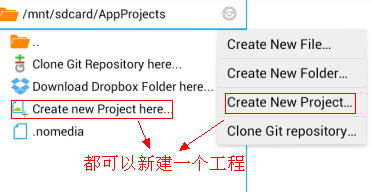
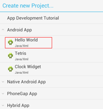
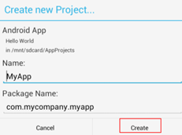
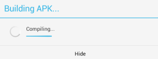
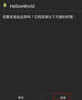
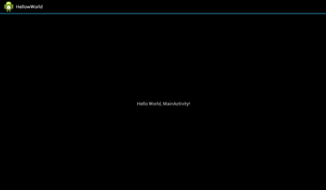

3.我们第一个安卓程序
上一节我们已经把AIDE安装好，并初步了解了一下AIDE，下面开始新建我们的第一个安卓程序。
____________在国外版本的编程教程中，hello world总是作为第一个例子记录于书本之中，所有的编程第一步就在于此了！我们在安卓上的第一个程序也不例外。可能我们在第一次打开AIDE的时候，它就已经提示我们新建了一个安卓项目，这里我们不用它。
打开AIDE项目管理文件夹，在项目文件管理器里长按或点击图标弹出选项菜单，如下图所示：

这里给出这个选项菜单的中英文对照，依次是：
New File-->新建文件
New Folder-->新建文件夹
New Project-->新建工程
Clone Git repoditoty-->复制Git存储空间
我们点击第3项New Project新建工程，（以后可以直接点击项目文件管理器里的Create new Project here...）会弹出如下图选项框：

点击Hello Word，如图：

中英文对照：Name-->应用程序名称
Package Name-->包名
Android App-->应用
Cancel-->取消
Create-->创建
in/mnt/sdcard/AppProject是我们新建项目在手机文件目录下的存放位置，默认AppProject文件夹（不要改动）。Name（应用程序名称）我们把它修改成HellowWorld，不要写中文。下面的Package Name不动我们以后在解释，然后点击Create创建。
和过去的PythonS60或者C语言不同，android应用程序不可能再像以前一样新建出来只是一个源代码文件那么简单，它是完整的软件项目或者说是软件工程。你会发现，新建的项目里有各种文件夹，先不要感到头晕，这些文件夹他们的作用我会在下一节课向大家详细解释。新建项目完后，我们的代码编写区已经默认帮我们打开了这个项目的java源文件，这个源文件是在../AppProject/HellowWorld/scr/com/mycompany/myapp目录下的MainActivity.java文件。
好，现在我们来运行下我们的安卓程序。点菜单-->Run(运行)。

它会有一个进度条提示，进度条走完后，会提示root权限。可以不予授权，它会让你安装软件，点击安装即可。如果授权了，以后点运行会直接安装并打开软件。操作如下图：

安装完成后，去到我们手机的软件菜单里看看有没有一个叫HellowWorld的程序，如图：

嗯嗯，也许你已经看出点什么奥秘了，欢迎进入Android程序的世界，这一节就到这里。
练习1.★创建一个名称为soeasy的程序。